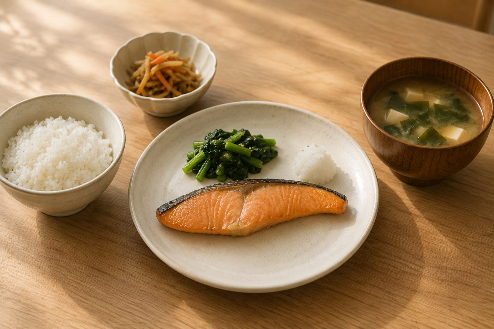

写真で二の腕を細く見せる
同じ腕でも、
角度で太さが変わる。
写真の二の腕は、腕そのものより「体との距離」と「向き」で見え方が変わります。撮影の日にすぐ使える方法です。

先に結論です。腕を体から少し離す、体を斜めに向ける、肘を軽く曲げる。この3つを意識するだけで、写り方が変わりやすくなります。
太く見えやすい写り方と、細く見えやすい写り方
| 太く見えやすい | 細く見えやすい | 理由 |
|---|---|---|
| 腕を体にぴったりつける | 腕と体の間に指1本分のすき間をあける | 腕が押されて横に広がるのを防げます |
| カメラに正面を向く | 体を斜め45度に向ける | 腕の幅が奥行き方向に逃げます |
| 肘を伸ばしきる | 肘を軽く曲げる | ラインに動きが出て、すっきり見えます |
| ブーケを胸の高さで持つ | ブーケをおへその高さで持つ | 肘が自然に体から離れます |
| 手のひらを体に向ける | 手の甲を少し外に向ける | 腕のねじれが目立ちにくくなります |
撮影前にやっておくこと
1
前日は塩分を控えめにむくみが出にくくなります。水は普段どおり飲んでください
2
撮影の直前に腕と肩を回す肩まわりがほぐれて、姿勢が起きやすくなります
3
気になる場所をカメラマンに伝える角度や立ち位置を調整してもらえます
4
試し撮りを1枚見せてもらうその場で腕の位置を直せます

あわせて読みたい結婚式前日の食事食べるものと避けるもの座って撮るとき
- 背もたれに寄りかからない。浅く座って背すじを伸ばします
- 腕はひざの上に軽く置く。体の横に下ろすと、腕が押されて広がります
- 上半身を少し前に傾ける。首が長く見え、全体がすっきりします
 あわせて読みたい二の腕をカバーできるウェディングドレス袖・ボレロ・ケープの選び方
あわせて読みたい二の腕をカバーできるウェディングドレス袖・ボレロ・ケープの選び方
ポーズだけでは気になる場合
撮影まで時間があれば、施術で整える方法もあります。背中や二の腕のコースがあるブライダルエステは、体験から試せます。